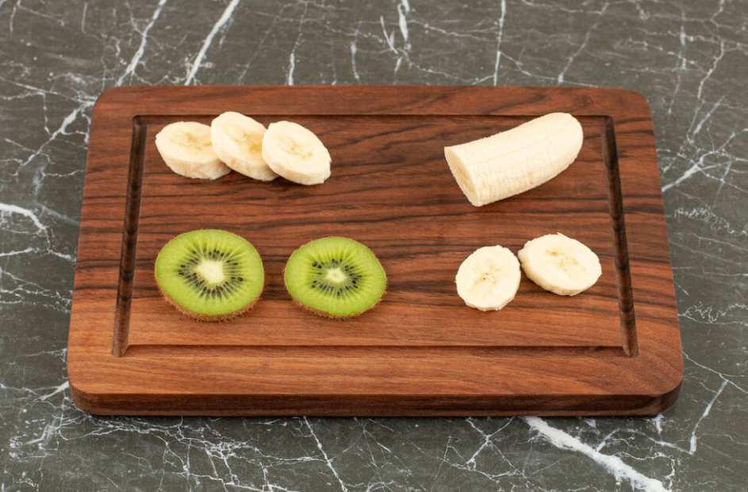
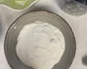
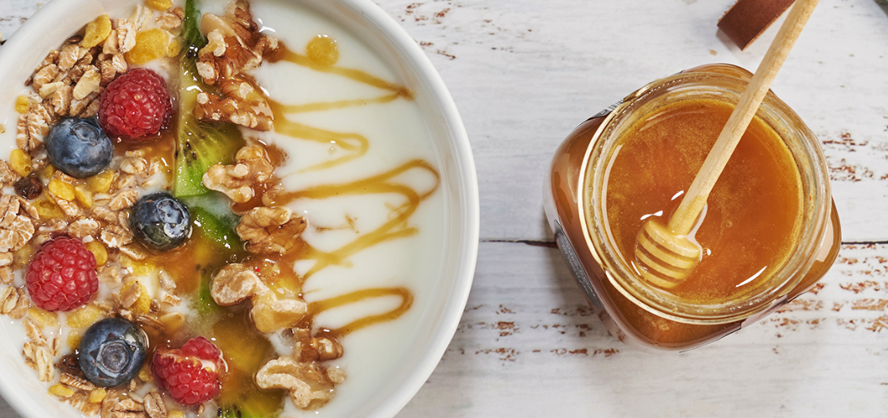

Pela el plátano y el kiwi y corta ambas frutas en trozos.
Lava los arándanos y pica o machaca las 2 onzas del chocolate negro 99% cacao en trozos, lo q te sea mas fàcil
Coloca en un recipiente el yogur, y vierte encima del mismo varios puñados de granola, arándanos y la fruta que acabas de cortar. Haz lo mismo para montar el otro bowl.
Puedes añadir un chorrito de miel o sirope de agave por encima si eres muy goloso. Puedes añadir o quitar fruta a tu gusto. Adáptalo a la fruta que tengas por casa. Si sigues una dieta vegana puedes emplear yogur de soja en la receta, te quedará muy rico.
